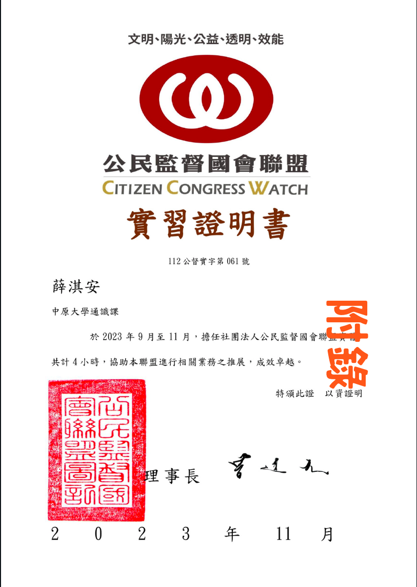
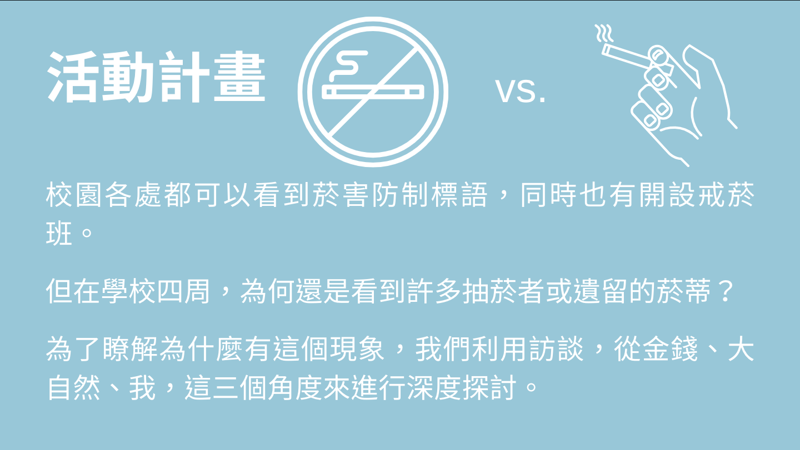
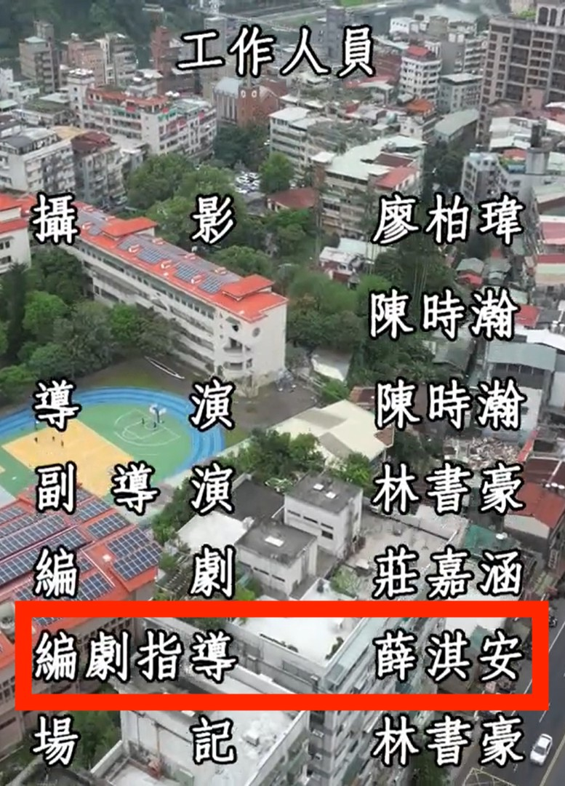

個人簡介
薛淇安
性別：女
生日：6月15日
個性：隨和、親切、喜歡接觸新事物
興趣：看小說、追動漫新番
優點：創意、理性、雜學範圍廣
缺點：社恐、偶爾粗心、容易緊張（內在）
座右銘：人總要繼續前進，所以站起來吧！
就學經歷
| 大學： | 桃園市 中原大學 資訊管理學系 | |
| 高中： | 新北市 新店高中 理組 | |
| 國中： | 台北市 實踐國中 | |
| 國小： | 新北市 青潭國小 |

▲111上學期：大專校院媒體素養課程學生心得競賽
▲112上學期：公民監督聯盟實習活動
▲112上學期：中原大學學生吸菸影響與問題
▲112下學期：2023新星影展 種子新星獎＃大家明天見，再見 編劇指導
能力分析
綜合能力
| 語言溝通 | 70 % | 寫作能力 | 85 % |
| 團隊合作 | |
| 靈活創意 | 90 % |
| 執行力 | 80 % |
程式能力
| Python | 85 % | Java | 70 % |
| SQL | 75 % |
| Html/Css | 80% |
學習規劃
- 大二：專業深化
- 選修更多專業課程，深入學習資訊管理領域的核心知識。
- 參與校內的學術研討會和實習機會，積極尋找機會實踐所學知識。
- 自主學習相關技能，如資料處理與視覺化、專案管理等，以提升實務能力。
- 大三：實踐應用
- 參與校內或外部的專案團隊，實際應用所學知識解決真實問題。
- 參加業界相關活動，拓展人脈，了解行業趨勢和最新技術。
- 開始尋找實習機會，以實際工作經驗補充學術知識。
- 大四：專業精進
- 選擇進階課程或專題研究，專攻自己感興趣的領域。
- 參與學術競賽或發表論文，提升學術研究能力和表達能力。
- 積極尋找職業發展機會，包括參加招聘會、申請工作和研究生院等。
- 畢業後：職業發展
- 踏入職場後持續學習和專業發展，不斷更新知識和技能，保持競爭力。
- 參與行業協會或專業組織，拓展人脈，持續職業成長。
- 考慮追求進一步的學術深造，如攻讀碩士學位或相關證照認證，以提升自身價值和專業地位。
自我期許
不求成為照亮未來的燈塔，只求成為堆砌出燈塔的石磚。
在資管領域深耕，學習更多相關知識和技能，積極參與實習或專案， 將理論知識轉化為實際能力，建立豐富經驗，為未來的職業生涯做好準備。